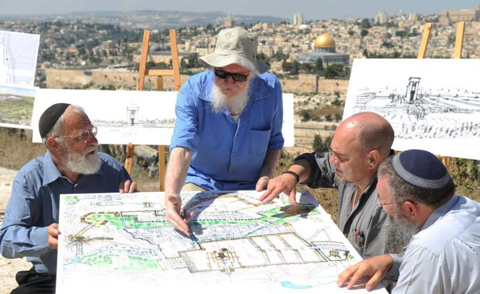
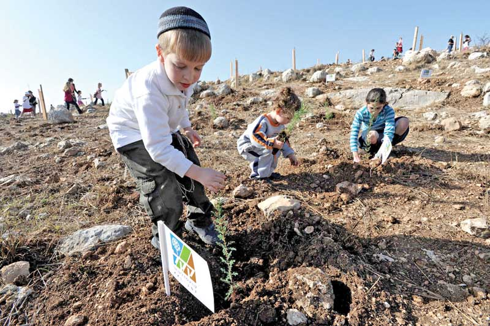
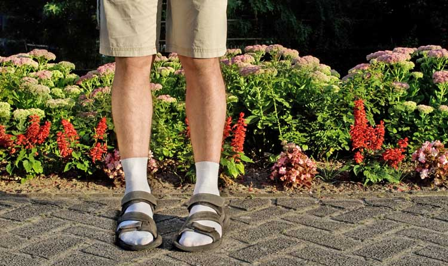
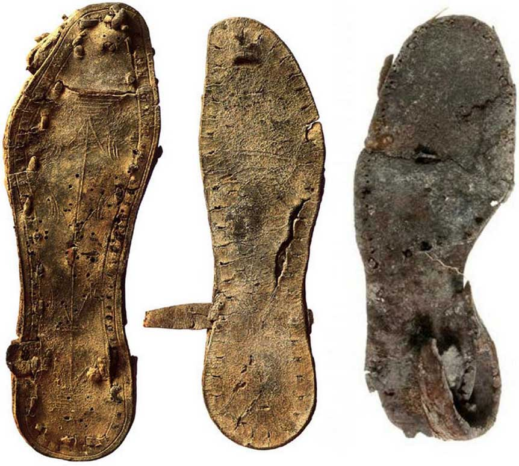
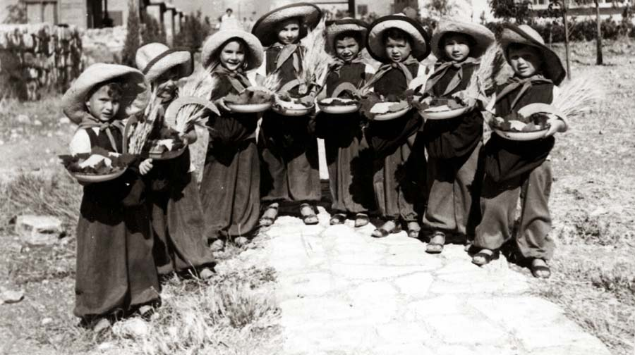

Скажи мне о твоих сандалиях и скажу тебе, кто ты. II
Важнейшим аксессуаром, определившим в эпоху становления израильской государственности облик «типичного» гражданина новой страны, наряду с шортами и панамой, стали так называемые «библейские сандалии» (сандалим танахиим).
Классические израильские сандалии в 60-х годах 20-го века начал выпускать сапожный кооператив «Нимрод», сделавший эту обувь чрезвычайно популярной и по-настоящему культовой по всей стране. В выпускавшихся в каталогах продукции «Нимрода» сандалии обозначались как «аутентичная израильская обувь, почти не изменившаяся со времен библейских патриархов».
начало статьи читайте здесь
перевод с иврита в сокращении: Эфраим Калиш (nrg.co.il)
Представители религиозно-сионистского лагеря обсуждают проект Третьего Храма на местности

Почему сандалии стали символом Сионистского движения?
Идентификация сандалий с национально-религиозной общественностью произошла почти мгновенно. Это не случайно. Как утверждает Эль-Ор, в национально-религиозном сионизме, сандалии на самом деле усиливают местно-израильско-светскую сторону. В многогранной само-идентификации этого сектора общества десантные ботинки и потертые сандалии указывают на специфические, характерные черты израильтянина - гражданина-защитника своей страны. Циони-дати (религиозный сионист), обутый в сандалии, это характеризует его, как гражданина, уроженца Израиля, который сражается за свою землю, исследует ее в походах, семьянин, - таков образ израильтянина для мира.
Это также политический акт. Сандалии являются частью униформы, являются частью более широкой работы по овладению и освоению пространства в Эрец Исраэль.
Освоение новых территорий Эрец Исраэль. Посадка поселенцами деревьев на Ту-биШват

Молитва после бояЭль-Ор утверждает, что сандалии, приняты религиозным сионизмом, стремящимся удаляться от всех символов престижа, в основном из-за его простоты и функциональности, и скромности. Главный аргумент успеха сандалий в израильском стиле является простота. С точки зрения стиля, все тяжеловесное и громоздкое исчезло со временем, и остались только изящные и простые линии.
"Эта линия, воспринятая организациями социалистов и халуцим (так называют в Израиле первопроходцев, пионеров) обратилась в культурную гегемонию, политическую и социальную. Ход развития религиозного сионизма, с 1967 г. (ошеломляющая победа в Шестидневной войне (в религиозных кругах она воспринималась не иначе, как чудо, сотворенное Всевышним за шесть дней, – примечание редактора ТОРААРТ)) - это попытка занять более значимое положение во всех сферах израильского общества, и унаследовать себе гегемонию и ее символы, все ценности поселенческой деятельности первопроходцев, общинность и скромность. Этот процесс поначалу происходил неосознанно. Но потом уже как осмысленное призвание для религиозных сионистов стать частью армии и средств массовой информации.
***
Сегодня вы не найдете сандалий даже летом, в среде светской молодежи элитных кругов, живущих в центре. Это попытка отделиться от религиозного общества?
- Не только. Процесс этот стал заметным в начале восьмидесятых годов, когда религиозный сектор еще не доминировал. Начала происходить американизация рынка, стали импортировать обувь, Reebok, которую каждый захотел иметь, надевая ее даже в летнее время. И теперь уже показалось странным, что нашей неизменной обувью долгие годы были сандалии компании Нимрод.
"Потом период резиновых шлепок. Они не имеют пряжек. Может быть сандалии более подходят для армии, для больших путешествий и только. Первоначальные сандалии стали отождествляться с поселенцами. Но и студенты Иерусалима в том числе левых взглядов все еще одевают их, т.к., они представляют собой символ израильского, иерусалимского в их глазах, но тель-авивские - уже нет. Нерелигиозный юноша оденет сандалии только в случае если он настоящий хнун (по-русски таких называют «ботаниками»).

В начале 80-х в моду вошла вычурность. На каждом шагу мне встречались расфуфыренные женщины с красными волосами, в блестящих лосинах и широких цветастых блузах. Только к концу 90-х годов, когда актуальным стал минималистичный стиль, люди стали вновь одеваться проще». «Вычурные наряды так и не стали в Израиле массовым трендом, — убеждена Эль-Ор, — простота и функциональность сохраняют свою актуальность».
Так кто те туристы, которые покупают израильские модели обуви сегодня?
- Важно помнить, что еврейские туристы из разных стран сегодня в значительной степени склонны проявлять интерес к иудаизму, не обязательно ортодоксальному. Это люди, которые отдают своих детей в еврейские образовательные заведения, или по крайней мере, посылают их в летние еврейские лагеря. И тогда их дочери приезжают сюда, в Израиль и знают, что принято носить в среде израильтян и хотят то же самое. Туристы тоже любят приобрести что-то, что сделает их подобными израильтянам, уроженцам страны. Такой турист хочет привести домой из путешествия что-то аутентичное, подлинное.
Какое же будущее ожидает библейские сандалии?
«Сандалии — действительно уникальный аксессуар, — уверена Тамар Эль-Ор. Их история насчитывает тысячелетия. И после возрождения израильской государственности сандалии обрели здесь новую жизнь. Два поперечных ремешка стали важнейшим атрибутом нового израильтянина, и они, я уверена, никуда не исчезнут».

***
От редактора ТОРААРТ: для меня было волнительно читать и переводить эту статью. Потому что здесь – живая история, которая творится на наших глазах. История, переданная в мелочах, через простые подошвы с двумя ремешками.
Не случайно эти сандалии были частью настоящего бума, взрывного интереса верующих многих стран к тому, что происходило в момент провозглашения в 1948г. независимого еврейского государства Израиль. И особенно этот процесс активизировался с началом чудесных побед Израиля в неравных войнах с многочисленным арабским окружением. Многие верующие увидели в этом руку Божью и подтверждение слов Творца о том, что Он не оставит Свой народ и однажды соберет его в земле отцов.
Приношение первых плодов на праздник Шавуот

В статье не раз упоминаются сандалии, как символ, вмещающий в себя очень многое, символ, соединяющий неразрывную цепь поколений и является, подобно ци-цит, напоминанием заповедей Всевышнего, Его обещаний однажды собрать Свой народ.
Еще одна вещь сильно зацепила меня: Бог творит Свою волю, как хочет. Берет и призывает кого хочет в Свои планы, хоть сапожника. Бог обращается к Своему народу через все, что сочтет нужным, хоть через дизайн самой простой обуви, которая существовала с древних времен. Через простые сандалии Он волен всколыхнуть все общество Израиля, ободрить его, и дать ему кожаный символ напоминанием Своей славы, некогда явленной отцам нашим и гарантией того, что и ныне Авину ше башамаим не оставит нас. Сегодня Он призывает всякого, кого Сам пожелает, творить вместе с Ним тем умением, тем ремеслом, тем даром, который мы получаем свыше.